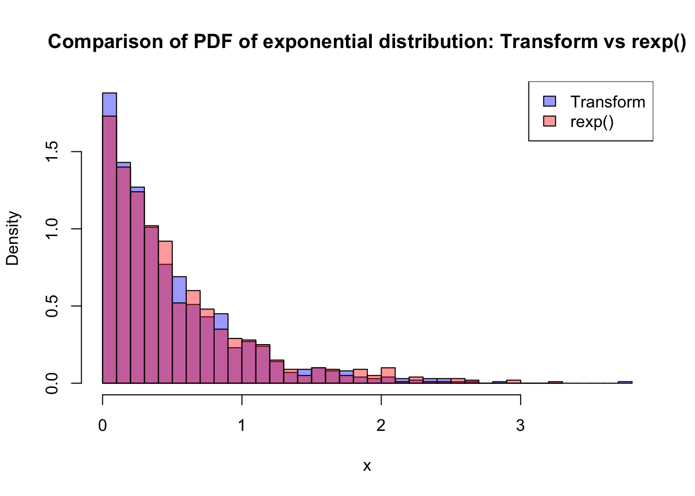

In the previous section, we studied how the distribution of a random variable changes when we apply a transformation, focusing on how probability density is redistributed under monotone and non‑monotone mappings. In simulation, however, we often face the inverse problem: rather than starting with a random variable and determining the distribution of its transformation, we want to construct a random variable with a specified distribution in the first place. Inverse transform sampling provides a direct solution to this problem by reversing the logic of transformation.
Starting from a Uniform(0,1) random variable—the fundamental output of most random number generators—we apply an appropriate inverse transformation to obtain samples from a desired distribution. This method makes explicit the connection between transformation theory and simulation practice, and it highlights why understanding how probability behaves under transformations is essential for building simulation algorithms.
We have already seen examples of this idea in practice, such as generating Bernoulli and Exponential random variables from Uniform(0,1) values; inverse transform sampling now formalises this approach and explains why it works in general.
17.1 Discrete Case (Precision Method)
The precision method is simple and widely used for simulating discrete distributions with a small number of possible outcomes. Its main advantages are:
Conceptually straightforward
Easy to implement
Works for any discrete distribution
However, when the number of outcomes becomes very large, more efficient algorithms may be required. In practice, many statistical software packages implement optimised methods internally, but the precision method remains important for understanding how discrete random variables are generated in simulation.
Suppose \(X\) is a discrete random variable that can take values
\[
x_1, x_2, \ldots, x_k
\]
with corresponding probabilities
\[
P(X=x_i)=p_i, \qquad i=1,2,\ldots,k,
\]
where
\[
p_i \ge 0, \qquad \sum_{i=1}^{k} p_i = 1.
\]
Our goal is to generate simulated values of \(X\) so that the outcomes occur with exactly these probabilities.
The precision method works by partitioning the unit interval \((0,1)\) into segments whose lengths correspond to the probabilities \(p_1, p_2, \ldots, p_k\).
A key theoretical result underlying inverse transform sampling is the Probability Integral Transform. The probability integral transform explains why uniform random variables play a fundamental role in simulation and provides the theoretical justification for constructing new random variables by transforming Uniform(0,1) draws.
For inverse transform sampling, we work directly with the cumulative distribution function. If \(X\) is a continuous random variable with cumulative distribution function \(F_X\), then the transformed variable: \[
U = F_X(X) \sim \text{Uniform}(0,1).
\]
Turning it around gives the sampling rule:
\[X = F_X^{-1}(U), \qquad U \sim \text{Uniform}(0,1).\]
This result allows us to turn the theoretical relationship between a random variable and its CDF into a practical simulation algorithm.
General Algorithm
The probability integral transform provides the theoretical justification for inverse transform sampling. We now turn this result into a practical simulation algorithm. The goal is to generate random variables with a specified distribution using only Uniform(0,1) random numbers.
Suppose we want to simulate a continuous random variable with cumulative distribution function \(F_X\), and assume that the inverse CDF \(F_X^{-1}\) is available in closed form. The inverse transform sampling algorithm proceeds as follows:
Generate a random number \[
U \sim \text{Uniform}(0,1).
\]
Transform this value using the inverse CDF: \[
X = F_X^{-1}(U).
\]
The resulting value \(X\) is a random draw from the target distribution with CDF \(F_X\).
This algorithm works because the inverse transformation exactly reverses the probability integral transform. Since \(F_X(X)\) is uniformly distributed on \([0,1]\), applying the inverse CDF to a Uniform(0,1) random variable reconstructs the original distribution. In this sense, inverse transform sampling is a direct application of transformation theory: it constructs a desired distribution by transforming a simpler one.
Inverse transform sampling is conceptually simple and widely used in simulation, particularly when the inverse CDF has a closed‑form expression. However, not all distributions admit an explicit inverse CDF, which motivates alternative simulation methods introduced later in the course.
We now illustrate this algorithm with a simple example where the inverse CDF can be derived explicitly.
Examples and Limitations
Example (Exponential distribution).
We briefly previewed this idea earlier; here we are using it as a worked example of the general inverse transform algorithm.
Inverse transform sampling is easiest to see when the inverse CDF has a simple closed form. For the Exponential distribution with rate \(\lambda\), the CDF is
\[
F(x)=1-e^{-\lambda x},\qquad x\ge 0.
\]
Setting \(U=F(X)\) and solving for \(X\) gives the inverse transform
\[
X = F^{-1}(U)= -\frac{1}{\lambda}\log(1-U),\qquad U\sim \text{Uniform}(0,1).
\]
The following R code implements the algorithm in three steps—generate uniforms, apply the inverse CDF, then validate the result by comparing the simulated histogram to rexp(). This mirrors the core simulation workflow:
set.seed(123)# Step 1: generate Uniform(0,1) valuesu <-runif(1000)# Step 2: transform them into Exponential(lambda)lambda <-2# rate parameterx <--log(1- u) / lambda# Step 3: Plot and compare with R's built-in rexp()x_builtin <-rexp(1000, rate = lambda)hist(x, breaks =30, col =rgb(0,0,1,0.4), freq =FALSE,main ="Comparison of PDF of exponential distribution: Transform vs rexp()")hist(x_builtin, breaks =30, col =rgb(1,0,0,0.4), freq =FALSE, add =TRUE)legend("topright", legend =c("Transform", "rexp()"),fill =c(rgb(0,0,1,0.4), rgb(1,0,0,0.4)))

Limitations (why we need other methods).
Inverse transform sampling is conceptually simple, but it has practical limitations:
You need an invertible CDF (or a tractable numerical inverse).
Many common distributions do not have a neat closed-form inverse CDF, so applying \(F^{-1}\) directly may be difficult or computationally expensive.
Not all transformations are “one-line” like the exponential.
Even when the CDF exists and is monotone, solving \(u = F(x)\) for \(x\) may not be algebraically possible.
This motivates alternative sampling techniques.
When \(F^{-1}\) is unavailable or inefficient, we use other approaches (e.g., acceptance–rejection or specialised transformations such as Box–Muller for Normal simulation).